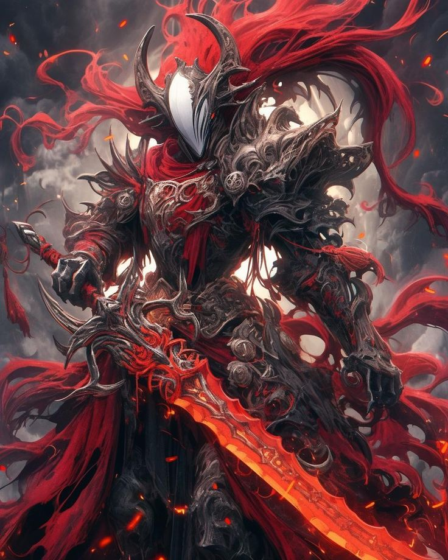

Swordsman
Stats:
HP: 1000
MP: 0
PHY STR: 22
PHY DEF: 25
MG STR: 12
MG DEF: 18

Swordsman Skills:
- Divine Strike (Offensive) (Level 0): The Swordsman channels divine energy into a single, holy strike against a target, dealing 350 DMG and decreasing their PHY DEF by 10% for 3 turns.
- Sacred Slash (Offensive) (Level 5): The Swordsman summons radiant blades to strike down foes, dealing 500 DMG to a single target and decreasing their MAG DEF by 15% for 3 turns. (Can only be used twice per battle)
- Celestial Execution (Offensive) (Level 15): The Swordsman calls upon the heavens to smite a single target, dealing 600 DMG and decreasing their AGI by 20% for 3 turns. (Can only be used twice per battle)
- Righteous Rend (Offensive) (Level 25): The Swordsman unleashes a barrage of sacred slashes, dealing 700 DMG to a single target and decreasing their VIT by 25% for 3 turns. (Can only be used once per battle)
- Sanctified Soul Rend (Offensive) (Level 35): The Swordsman tears away the darkness from a target's soul, dealing 700 DMG and decreasing their MND by 30% for 3 turns. (Can only be used once per battle)
- Radiant Oblivion (Offensive) (Level 45): The Swordsman unleashes the power of the sun, dealing 800 DMG to all enemies and decreasing their PHY ATK by 35% for 2 turns. (Can only be used once per battle)
- Purifying Vortex (Offensive) (Level 55): The Swordsman creates a vortex of holy light, dealing 900 DMG to all enemies in a radius and decreasing their MAG ATK by 25% for 2 turns. (Can only be used twice per battle)
- Divine Detonation (Offensive) (Level 65): The Swordsman detonates the divine energy within themselves, dealing 1000 DMG to all enemies and decreasing their SPR by 40% for 3 turns. (Can only be used once per battle)
- Blade of the Archons (Support) (Level 75): The Swordsman summons the legendary Blade of the Archons, increasing their PHY ATK by 100% for 3 turns. While active, the Swordsman's attacks decrease the target's PHY DEF by 30% per hit. (Can only be used once per battle)
- Sacred Annihilation (Offensive) (Level 85): The Swordsman unleashes the full might of the Archons, dealing 1200 DMG to all enemies and decreasing their VIT by 50% for 5 turns. (Can only be used once per battle)
- Archons' Judgment (Offensive) (Level 100): The Swordsman calls upon the power of the Archons to smite their foes, dealing 1800 DMG to all enemies and decreasing their PHY DEF by 70% for 7 turns if their HP is below 50%. (Can only be used once per battle)